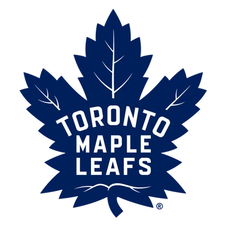

Филадельфия — Эдмонтон итог матча 16 ноября
Статистика матча
- 36Броски в створ20
- 0 из 8Голы в большинстве2 из 3
- 8Штрафные минуты18
- 43 %Выигранные вбрасывания57 %
- 26Силовые приёмы13
- 9Блокированные броски13
- 4Отборы5
- 17Потери8
Удаления по минутам 13
- 1-й период
- Leon DraisaitlУдар клюшкой2 мин
- Simon BenoitАтака в голову2 мин
- Trent FredericТолчок клюшкой2 мин
- Jamie DrysdaleВыброс шайбы2 мин
- Shakir MukhamadullinВыброс шайбы2 мин
- 2-й период
- Ty EmbersonТолчок клюшкой2 мин
- Connor MurphyГрубость2 мин
- Trevor ZegrasБлокировка2 мин
- Evan BouchardЗадержка клюшки соперника2 мин
- 3-й период
- Owen MichaelsВыброс шайбы2 мин
- Mattias EkholmПодножка2 мин
- Cam YorkУдар клюшкой2 мин
- Connor McDavidЗадержка соперника2 мин
Данные лиги.
- ТурнирНХЛ
Коротко о матче
Филадельфия — Эдмонтон 2:5: гости победили.
Главное перед игрой — серия: Эдмонтон — 4 победы подряд. По форме разница была заметной: в пяти последних матчах Эдмонтон — 4 победы, Филадельфия — 2 победы. По голам за эти пять матчей: Филадельфия — в среднем 2,8 забито и 2,8 пропущено, Эдмонтон — 3,0 и 2,0.
Стоит учесть и площадку: дома Филадельфия — 3 победы в 10 матчах, на выезде Эдмонтон — 8 побед в 9. До этого команды встречались 3 января 2026 года: Эдмонтон — Филадельфия 2:5.
Отдых и дорога
Филадельфия играет второй день подряд, Эдмонтон играет второй день подряд.
 Филадельфияхозяева
Филадельфияхозяева
- 2-йматч за два дняВчера тоже играли — без дня отдыха
- 4матча за 7 днейвключая этот
- 1-йдомашний матч подряд
- 650км перелётбез смены часового пояса
Прошлый матч: 15.11, Коламбус — Филадельфия 3:4
 Эдмонтонгости
Эдмонтонгости
- 2-йматч за два дняВчера тоже играли — без дня отдыха
- 4матча за 7 днейвключая этот
- 2-йвыездной матч подряд
- 550км перелётбез смены часового пояса
Прошлый матч: 15.11, Торонто — Эдмонтон 0:1
Перелёт — по прямой между городами прошлого и этого матча. Время отдыха считаем от начала прошлого матча.
Форма: последние матчи
Филадельфия 2 победы из 5
 П2:3
П2:3 П3:4
П3:4 В3:1
В3:1- П2:3
 В4:3
В4:3
Эдмонтон 4 победы из 5
 П4:5
П4:5- В4:2
- В3:1
- В3:2

В1:0
Кто в форме
Больше всего очков (голы + передачи) в последних матчах команды.
Филадельфияза 5 последних матчей
| Игрок | Г | П | О |
|---|---|---|---|
| Denver Barkey | 3 | 1 | 4 |
| Christian Dvorak | 0 | 4 | 4 |
| Noel Acciari | 2 | 1 | 3 |
| Matvei Michkov | 1 | 2 | 3 |
| Tyson Foerster | 1 | 2 | 3 |
Эдмонтонза 5 последних матчей
| Игрок | Г | П | О |
|---|---|---|---|
| Connor McDavid | 2 | 8 | 10 |
| Leon Draisaitl | 5 | 4 | 9 |
| Evan Bouchard | 3 | 3 | 6 |
| Mattias Ekholm | 1 | 3 | 4 |
| Zach Hyman | 2 | 1 | 3 |
Дома и в гостях
Хозяева — в своих домашних матчах, гости — в выездных. Регулярный чемпионат этого сезона.
| Матчей | 10 | 9 |
|---|---|---|
| Побед | 3 из 10 | 8 из 9 |
| Забивают за игру | 2,6 | 4,3 |
| Пропускают за игру | 3,6 | 2,0 |
| Тотал больше 5,5 | 50% | 44% |
| Доходили до овертайма | 30% | 11% |
Жирным — лучшее из двух. Овертайм — с буллитами.
Вратари
Цифры за сезон. Кто выйдет в старте, клубы обычно объявляют только перед игрой.
Филадельфия
| Вратарь | И | Отражено | Пропуск. | На ноль |
|---|---|---|---|---|
| Dan Vladar №80 | 12 | 87,7% | 3,31 | 0 |
| Joseph Woll №53 | 12 | 89,9% | 2,92 | 0 |
Эдмонтон
| Вратарь | И | Отражено | Пропуск. | На ноль |
|---|---|---|---|---|
| Devon Levi №27 | 11 | 90,7% | 2,44 | 1 |
| Tristan Jarry №35 | 10 | 91,2% | 2,45 | 2 |
| Matt Tomkins | 2 | 88,0% | 3,09 | 0 |
Отражено — доля отражённых бросков. Пропуск. — пропущено шайб в среднем за игру.
Личные встречи
- Эдмонтон2:5Филадельфия
- Филадельфия1:2ОТЭдмонтон
- Филадельфия6:3Эдмонтон
- Эдмонтон4:3ОТФиладельфия
Положение в таблице
| Команда | Место | И | В | П | Голы | Очки |
|---|---|---|---|---|---|---|
| 12 | 24 | 7 | 17 | 57:80 | 20 | |
| 1 | 23 | 17 | 6 | 92:62 | 37 |
Куда дальше
Материалы носят информационный характер и не гарантируют результат. Реклама букмекеров на сайте не размещается. Сайт только для совершеннолетних (18+).